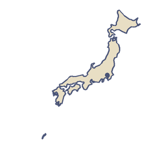

亚洲
日本
日本是亚洲东海岸外一长串岛屿。2023 年，人们用数字地图重新数了一遍，一共找到 14125 座岛，差不多是以前数字的两倍。它自己的名字「日本」，字面上常被解释为「太阳的本源」。
“我想从飞机的窗口数一数它的岛。”
- 富士山高 3776 米，是日本最高的山，也是一座火山：它上一次喷发是在 1707 年。
- 日本有 111 座活火山，气象厅日日夜夜都盯着其中的几十座。

国土
日本有四个主要岛屿。本州最大，其次是北海道、九州和四国，它们合起来约占全国面积的 95%。山地覆盖了大部分国土，森林覆盖了约三分之二。
出行
1964 年 10 月 1 日，日本开通了世界上第一条高速铁路：东海道新干线。它连接东京和大阪，正好赶上东京奥运会，这也是第一届在亚洲举办的奥运会。最早的列车最高能跑到 210 公里/小时，是当时的世界纪录。它至今仍是最繁忙的新干线，2023 年载客 1.61 亿人次。2021 年，东京在推迟一年后再次举办夏季奥运会，成为亚洲第一座两次举办夏季奥运会的城市。
饮食与手工艺
2013 年，联合国教科文组织把日本的传统饮食文化「和食」列入非物质文化遗产名录。这一项目以新年为中心：家家户户做年糕和特别的菜肴，每道菜都有自己的寓意，用的是米、鱼、蔬菜和野菜。第二年，联合国教科文组织又列入了和纸，也就是手工制作的日本纸。造纸的人把构树的树皮煮软，用手捶打纤维，再用竹帘从水里捞起纸浆。这门手艺大约有 1300 年的历史，滨田、美浓和小川的造纸人让列入名录的三种和纸传承至今。